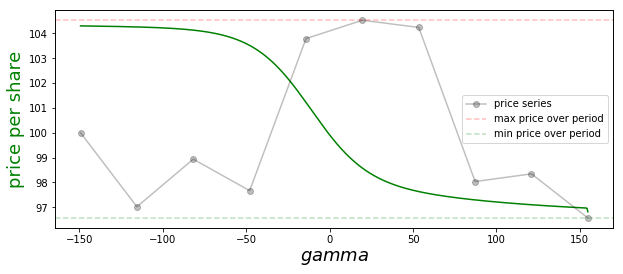
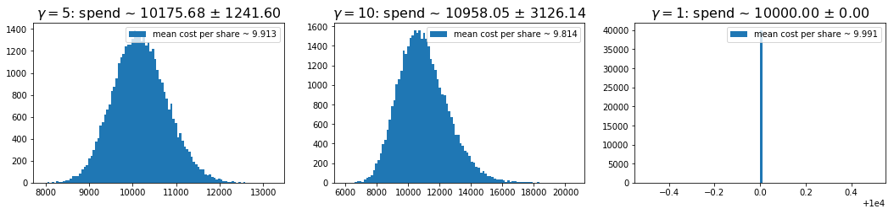

In this note, I consider a generalization of Dollar Cost Averaging — a popular investing strategy that involves gradually building up one’s holding in a stock over a pre-specified period of time. The generalization I consider can guarantee better prices paid per share — relative to the standard approach — but its use comes at the cost of requiring one to have a flexible budget. The idea essentially boils down to leaning in more heavily on low price periods.
Model system and results
In this post, we will assume a scenario where one wants to enter into a stock over a set of \(K\) equally spaced periods. These periods could be separated by minutes, hours, or days, etc. The price of the stock at period \(i\) will be written as \(p_i\) and the number of shares purchased then will be
where \(A\) and \(\gamma\) are constants that are set before beginning. The total number of shares purchased, total money spent, and price per share realized are then given by,
respectively.
The green curve in the figure below records the price paid per share under our strategy as a function of \(\gamma\) for the example price series shown in black (this has a hidden, separate x-axis).

This figure illustrates a number of general points about our strategy:-
If \(\gamma = 0\), we purchase a fixed number of shares each day, \(A\). The resulting price paid per share (\ref{4}) is then the arithmetic mean of the period prices.
-
If \(\gamma =1\), we spend an equal amount of money each day. This is the standard dollar cost averaging method. Plugging this choice into (\ref{4}), one finds that the price paid per share in this case is the harmonic mean of the prices over the series.
-
The arithmetic-harmonic means inequality implies that the \(\gamma=1\) necessarily beats the \(\gamma=0\) approach when it comes to price per share paid. This can be understood as follows: The \(\gamma=1\) method results in relatively more shares being purchased on low price periods, which causes these periods to be more heavily weighted in the relevant average.
-
More generally, we prove in an appendix below that increasing \(\gamma\) always causes the price per share to go down. This holds for all possible price series — including that shown in our figure above, where we see the green curve is monotonically decreasing. This result holds because increasing \(\gamma\) causes one lean in even harder on low price periods.
-
As \(\gamma \to \infty\), our purchase strategy is dominated by the lowest price period, and this is the price we end up paying per share on average.
-
As \(\gamma \to -\infty\), our strategy is dominated by the highest price period, and this is the price we pay. This limit is attractive when we want to exit / sell a holding.
-
The downside of our strategy — relative to the standard dollar cost averaging method — is that it requires a flexible budget. However, for \(\gamma\) not too large, we can often get a meaningful reduction in price per share without dramatically increasing the variance in amount spent: e.g., a one percent drop in price per share might be possible if one is willing to have a ten percent flexibility in one’s budget. We give numerical examples in the next section.
-
If the stock is drifting over the \(K\) periods in question, all dollar cost averaging methods may give a higher price than simply purchasing everything on the first period. For this reason — when a cheaper price per share is the objective — I suggest using these strategies over short time frames only — say, over a day or week. That’s because stock price variance typically dominates drift over short periods.
We now turn to a quick numerical study, and then conclude with our appendix covering the proof of monotonicity.
Numerical study
In this section, we provide some helper python code that allows one to simulate price series and check the results of running our strategy (\ref{1}) on top of them. The following two code blocks (1) generate log normal random walk price series, and (2) carry out our strategy.
import numpy as np
def simulated_price_series(initial_price, drift, std, steps):
"""
Returns a simulated price series asserting the log of the
price takes a random walk with drift and variance, as
passed.
"""
drifts = np.arange(steps) * drift
random_factors = std * np.random.randn(steps)
random_factors[0] = 0
returns = drifts + random_factors
return initial_price * np.exp(returns)
def simulated_series_and_purchases(
gamma,
initial_price,
drift,
std,
steps):
"""
Simulate price trajectory of length steps and then apply the
generalized dollar cost averaging method -- this entails buying
N_i shares at step i, with N_i ~ 1 / p_i ^ gamma.
Return the total money spent, shares purchased, and average price
per share.
"""
price_series = simulated_price_series(initial_price, drift, std, steps)
shares_series = 100 / ((price_series/price_series[0]) ** gamma)
money_spent_series = price_series * shares_series
# summary stats
shares = np.sum(shares_series)
money_spent = np.sum(money_spent_series)
return shares, money_spent, money_spent / shares
With these in place, I ran 40k simulation with the following parameters for the price series:
initial_price = 10.0
steps = 10
drift = 0.0
std = 0.05
In the simulations, I considered \(\gamma=5\), \(10\), and \(1\) — the last being the standard dollar cost averaging method. Histograms of the resulting spends are shown below for each case. The titles give the mean and standard deviation of the amount spent over the traces, and the legends give the mean prices per share, averaging over traces. We can see that we can get a fairly significant improvement in mean price as we lift \(\gamma\), but doing this requires that we occassionally spend a lot more money.
One can mitigate the very large spend events by capping the amount spent per day. For example, if one caps the daily spend at fifty percent above that on the first day, the \(\gamma=10\) case here gives a spend distribution of \(10194 \pm 2069\), and a mean price per share of \(9.86\).

Appendix: Average price per share monotonicity
In this appendix, we give a proof that increasing \(\gamma\) in (\ref{1}), always results in a decreasing average price per share (more precisely, it can’t result in an increase).
To begin, we recall our definitions: The number of shares purchased at \(p_i\) is assumed to be
The total number of shares purchased is then obtained by summing this
The average price per share is then
where
is the normalized weight applied to price \(p_j\). Plugging this last line into (\ref{A3}), we get a simple expression for the average price per share
Here, we use brackets for equal weight averages over the price series. This formula shows that the mean paid price per share is related to the ratio of two adjacent moments of the price series. We will now argue that this is monotic in \(\gamma\) [Aside: It looks like one might be able to provide an alternative proof of our result from the ratio of moments expression above, combining that with one of the Chebychev inequalities. However, I haven’t been able to get that to work just yet].
To show that (\ref{A3}) is monotonic in \(\gamma\), we first note that the relative weight applied to any two prices is given by
If \(p_i\) is the minimum price in the series this is necessarily an increasing function of \(\gamma\) for any other \(p_j\). In order for the weights to continue to be normalized to one, this implies that the weight applied to the smallest price must always increase as we increase \(\gamma\).
Next, we note that with the above observation, our result is trivially true when \(k=1\) and \(k=2\). Suppose then that the result holds up to \(k-1\) periods and the consider the case at \(k\). If we order the \(p_i\) values from largest to smallest, we then have
The sum above is the weighted average we’d realize if we only invested on the first \(k-1\) ordered prices, and the \(\tilde{w}_i\) are the effective weights we’d apply in that case. By assumption, this inner sum is necessarily non-increasing with \(\gamma\). Therefore, if we let \(w^{\prime}\) be the weight applied at some \(\gamma^{\prime} > \gamma\), we have
But this last line is just like the \(k=2\) case: We move from one weighted average of two values (namely, \(p_k\) and the weighted sum of the first \(k-1\) prices with weights fixed as at \(\gamma\) — which is necessarily not smaller than \(p_k\)) to another that applies more weight to the smaller of the two values — ultimately giving a smaller result. Continuing with the last line, then, we have
This completes our proof.
 Jonathan grew up in the midwest and then went to school at Caltech and UCLA. Following this, he did two postdocs, one at UCSB and one at UC Berkeley. His academic research focused primarily on applications of statistical mechanics, but his professional passion has always been in the mastering, development, and practical application of slick math methods/tools. He currently works as a data-scientist at Stitch Fix.
Jonathan grew up in the midwest and then went to school at Caltech and UCLA. Following this, he did two postdocs, one at UCSB and one at UC Berkeley. His academic research focused primarily on applications of statistical mechanics, but his professional passion has always been in the mastering, development, and practical application of slick math methods/tools. He currently works as a data-scientist at Stitch Fix.
Comments